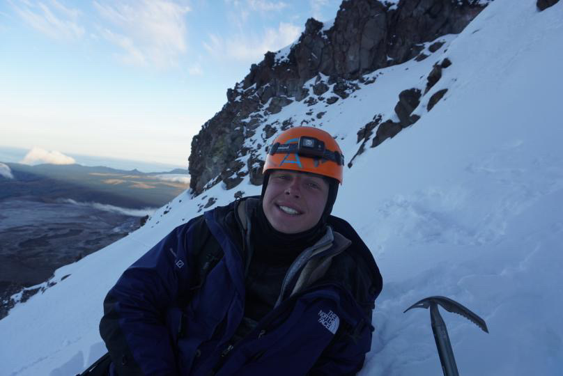

Why I Love Mountain Climbing
Climbing has always been more than just a hobby for me, it’s a way to escape from everyday stress and challenge myself in a physical and mental way. Every climb pushes me beyond my limits, requiring focus, perseverance, and problem-solving. I enjoy the sense of accomplishment that comes from reaching a summit and the quiet moments of reflection along the way. Climbing allows me to grow, both as an athlete and as a person, by testing my endurance and resilience in ways that few other activities can.
"It's not the mountain we conquer, but ourselves" -Sir Edmund Hillary.
Climbing Tips
- Prepare Physically
- Cardio training
- Strength training
- Gather Proper Gear
- Climbing shoes
- Ropes and harness
- Saftey First
- Climb with an experienced climber
- Check for avalanches
Watch a Climbing Documentary
Benefits of climbing
Climbing offers a unique combination of physical, mental, and emotional benefits. Physically, it strengthens muscles, improves balance, and increases endurance. Mentally, it teaches problem-solving, patience, and focus as each route presents new challenges. Emotionally, climbing helps reduce stress and boosts confidence by showing me what I’m capable of overcoming. Beyond personal growth, it also fosters a sense of community and teamwork, as climbers often support and encourage one another on difficult routes. Overall, climbing is a holistic activity that strengthens both body and mind while providing a rewarding sense of achievement.
Mountain Climbing Causes of Death Data Visualization

This Tableau visualization shows data related to accidents and causes of injury in mountain climbing. Contrary to popular belief, climbing is not as dangerous as many think. When proper safety measures, training, and equipment are used, the risk of serious injury is relatively low compared to other sports. The graph highlights that most incidents are preventable, reinforcing that climbing is a safe and rewarding activity when approached responsibly.